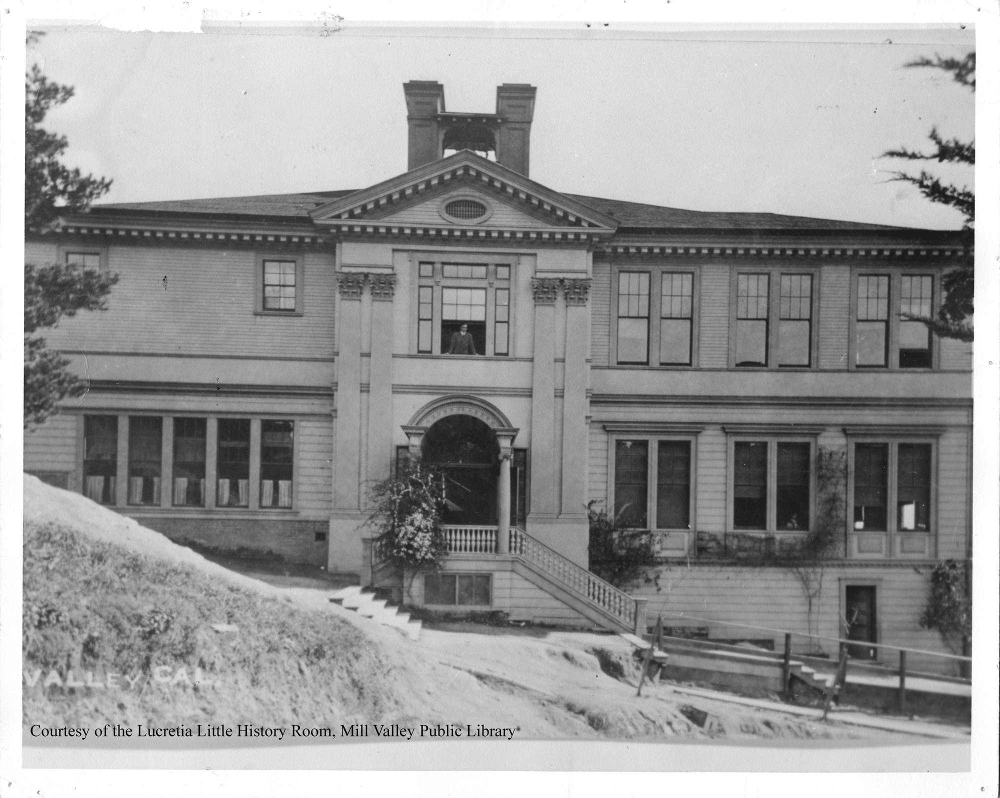
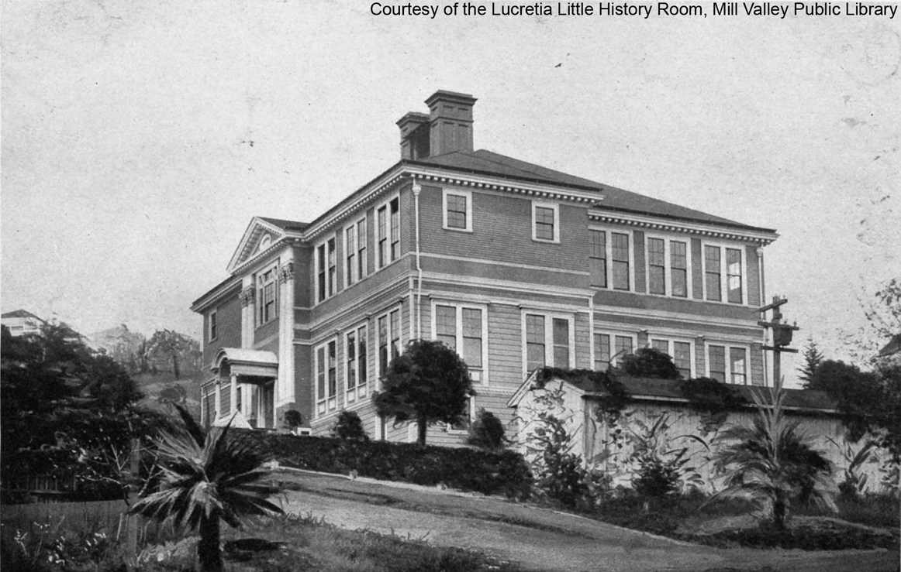
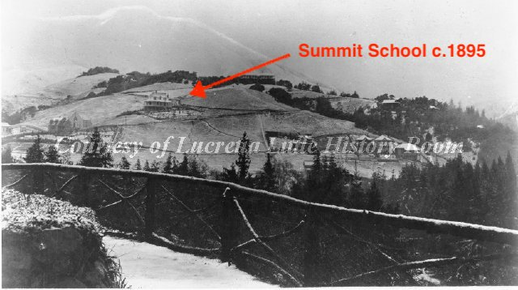

~9 Summit Avenue, Mill Valley, CA 94941
In the 1920s this building was one of the primary elementary schools in Mill Valley. The Summit School was the first and one of the most populated elementary schools in Mill Valley. It served as the only elementary school for all of Mill Valley from 1892 - 1908. The original building on the plot was a one-room building with an enrollment of 35. This served as the school from 1892 to 1896 when it was expanded to a two story building to accommodate more students. The building was used until June of 1939, when it was replaced by the large Old Mill School. The building was finally demolished in 1941 and the plot, that now holds six homes, was sold for $1,350.
SketchUp Make 2017 model screenshot
references her time at the Summit School
 Photo c.1910, Courtesy of the Lucretia Little History Room, Mill Valley Public Library
Photo c.1908, Courtesy of the Lucretia Little History Room, Mill Valley Public Library
 Photo of Mill Valley c.1895, Courtesy of the Lucretia Little History Room, Mill Valley Public Library
TimeWalk Unity Model